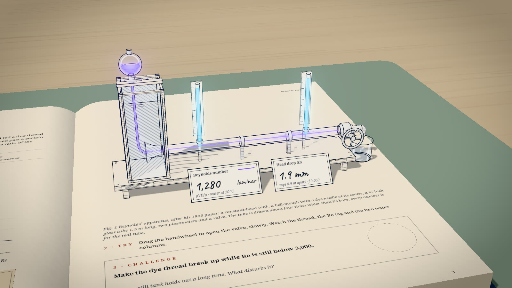

The Lab · IIT Hyderabad
Coursework you can play with.
Experiments and ideas from my IIT Hyderabad courses, rebuilt as things you can open. Turn a valve, change a number, and see what the textbook meant.
- 4 builds
- 2 courses
- last added 31 Oct
Shelves
One folder
per course.
Every course gets a folder. Open one to see what I built for it.
Builds
Everything
in the lab.
Newest first. Each one opens on its own page and works on a phone or a projector.

3D lessonOpenReynolds’ PipeReynolds’ 1883 experiment as a pop-up book page. Open the valve and watch the dye thread tear into turbulence.Interactive figureOpenReynolds’ Pipe, the figureThe same experiment as an isometric drawing, with a friction chart that jumps from 64/Re to Blasius the moment the dye breaks.Interactive figureOpenSénarmont’s PlateWax melts as an ellipse on a quartz crystal: Sénarmont’s 1847 sight of conductivity as a tensor.SolverOn the wayTransport Lab UpgradeThe course lab’s solver beside an exponential-scheme Crank–Nicolson upgrade, both checked against the exact solution.
Method
How a build
gets made.
- 01Start from the courseAn experiment, a derivation or a lab exercise that reads flat on paper.
- 02Build the real thingThe actual apparatus or object, made interactive, with Claude as my build partner.
- 03Keep the numbers honestEvery reading comes from the physics, with the model and its sources on the page.